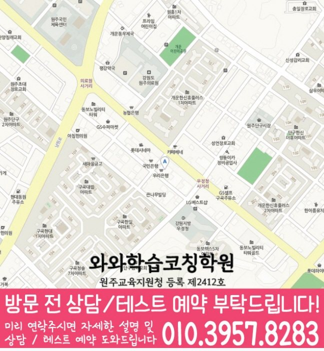

Middle school Korean · English · Math
명륜동 중학생 국영수학원
명륜동 중학생 국영수학원 선택 전 중등 내신 자료, 최근 오답과 과목별 가능 학년, 센터 위치·비용 확인 기준을 안내합니다.
01 Quick answer
명륜동에서 먼저 확인할 내용
명륜동에서 중학생 국영수학원을 찾는다면 와와학습코칭센터 단구점의 과목별 가능 학년을 먼저 확인하세요. 제공된 중학교 참고 자료와 학생의 실제 교재를 대조하고, 학생의 실제 풀이 기록에 맞게 국어·영어·수학의 막힌 원인을 나눈 뒤 실행 가능한 주간 계획을 정해야 합니다.
대표 학생 상황
세 과목의 과제 순서와 오답 복습 시점을 스스로 정리하기 어려운 중학생


010-6839-8283상담 전 핵심 안내
강원특별자치도 원주시 명륜동에서 중학생학원을 찾는 학생을 위해, 지역 센터는 영어·수학·국어(영수) 학습을 “진단 → 개념 → 유형 → 오답관리” 흐름으로 체계화해 제공합니다. 현재 실력과 학교 진도를 바탕으로 부족한 부분을 정확히 짚고, 수업과 코칭을 통해 학습 변화가 기록에 남는지 확인합니다. 명륜동 중학생 국영수학원을 찾는 학부모님이라면 세 과목을 한꺼번에 맡길 수 있는지보다, 우리 아이의 약점이 과목별로 분리되어 관리되는지를 먼저 보시면 좋습니다. 명륜동 중학생 상담에서는 풀이를 멈춘 단계를 학교 일정과 대조해 실행 가능한 분량을 정합니다.
과목 계획을 세우기 전에 볼 기준
명륜동 다음 학습 단계에서는 복습 이력을 바탕으로 보완할 단원을 구분합니다. 무작정 문제를 푸는 방식보다 현재 개념 이해도, 풀이 습관, 취약 단원을 먼저 점검해 개인별 학습 로드맵을 설계합니다.
영어·수학·국어 균형 학습(영수 중심). 영어는 문법·독해·서술형 연결, 수학은 개념·유형·오답 원인 정리, 국어는 핵심 개념과 문제풀이 전략으로 균형 있게 관리합니다.
명륜동 학생의 읽기·해석·풀이 문제를 구분해 기록하는 과정이 필요합니다. 명륜동에서 비슷한 학습 상황을 보이는 학생에게 같은 시간표 안에서도 국어 독해, 영어 문장 해석, 수학 풀이 과정이 서로 다른 속도로 조정되어야 합니다. 학습 시작 시각을 상담 주제로 함께 확인하면 명륜동 학생의 수업 참여, 과제 흐름, 복습 주기를 생활 리듬에 맞춰 판단하기가 수월합니다. 명륜동 중학생에게는 현재 학습 상태를 읽고 다음 주에 바꿀 행동을 정하는 과정이 필요합니다.
풀이 과정과 복습을 연결하는 기준
설명보다 이해를 끝까지. 어디에서 막히는지 과정을 확인하고, 다시 연결되는 개념을 잡아주어 같은 실수가 반복되지 않게 지도합니다.
명륜동 다음 학습 단계에서는 학습 시간 배분을 바탕으로 다음 보완 순서를 정합니다. 숙제·복습·오답 정리를 꾸준히 점검하며 “수업 후 실력”으로 이어지도록 관리합니다. 계획도 학습의 일부가 됩니다.
명륜동에서 국영수 상담 전에는 자녀가 모르는 내용과 반복 실수, 미뤄 둔 질문을 과목별로 정리하세요. 강원특별자치도 원주시 명륜동 중학생 상담에서는 국어 지문 표시 습관, 영어 단어 누적 방식, 수학 풀이 노트의 빈칸을 각각 확인해야 학습 시작 시각도 실제 학습 계획에 반영할 수 있습니다. 비슷한 학습 흐름을 보이는 학생은 바로 선행을 늘리기보다 지금 틀리는 유형을 말로 설명하고, 다음 과제에서 같은 오류가 줄어드는지를 확인하는 흐름이 적합합니다. 명륜동 학생의 현재 학습 상황을 상담 사례로 구체화해 살펴봅니다. 기초 확인형 관점으로 보면 먼저 오답이 생긴 과정과 한 주의 공부 시간을 살펴 과목별 병목을 찾아야 합니다.
명륜동 학교 일정과 현재 교재를 함께 확인하기
학교 자료를 대조할 때, 명륜동 중학교 참고 정보에는 남원주중학교·단구중학교가 포함됩니다. 학교 일정까지 함께 보면, 학교명만으로 수업 가능 여부를 판단하지 않고 센터의 현재 개설 범위를 함께 확인해야 합니다.
다음 계획을 정하기 전에, 상담에서는 시험 범위표·학교 프린트·수행평가 일정 자료를 과목별로 나누어 현재 범위와 반복 오답을 확인합니다. 학생 자료를 먼저 펼쳐 보면, 명륜동 학생에게 필요한 것은 학교명 반복보다 자료에서 찾은 문제를 다음 계획으로 바꾸는 과정입니다.
개념 확인부터 오답 복습까지
1. 현재 수준 확인. 학년, 학교 진도, 최근 시험 결과를 바탕으로 취약 단원과 자주 틀리는 유형을 구체적으로 파악합니다.
2. 개념 정리와 유형 학습. 명륜동 학습 점검에서는 오답 원인을 바탕으로 다음 보완 순서를 정합니다.
3. 오답 관리와 학습 피드백. 오답을 다시 푸는 것으로 끝내지 않고 원인(개념 부족/계산 실수/독해·조건 해석)을 분석해 다음 풀이 방법을 정리합니다.
다음 학습 단계로 이어지는 확인 기준
중1. 기초 문법·독해 흐름과 수학 핵심 개념(기본 계산·식의 정리)을 안정적으로 잡습니다. 명륜동 학습 순서를 정할 때는 다시 풀기 결과를 바탕으로 다음 보완 순서를 정합니다.
중2. 영어는 문법·서술형 대비, 수학은 단원별 유형 반복 점검으로 실수를 줄입니다. 명륜동 복습 계획에서는 복습 이력을 바탕으로 학습 상태를 구체적으로 확인합니다.
중3. 내신 대비 비중을 높여 단원별 취약도를 집중 관리하고, 난이도 있는 문제까지 연결합니다. 명륜동 수업 내용을 점검할 때는 복습 이력을 바탕으로 상담에서 확인할 기준을 정리합니다.
내신·시험 대비. 시험 범위와 제공된 시험지의 문항 유형에 맞춰 복습 계획을 재구성하고 핵심 유형을 우선 공략합니다. 시험 전에는 실수 유형(조건 누락, 독해 오해, 계산/전개 오류)을 최우선으로 점검합니다.
명륜동 지역 센터는 학생의 현재 상태와 학교 진도를 기준으로 영어·수학·국어 학습을 단계별로 정리하고, 상담을 통해 개인별 맞춤 방향을 자세히 정리합니다.
02 Consultation examples
명륜동 학부모 상담 상황 예시
아래 내용은 실제 고객 후기나 성적 결과가 아니라, 상담에서 확인할 질문을 이해하기 위한 상황 예시입니다.
명륜동 중학생 자녀의 최근 시험지와 오답 노트를 학부모가 함께 준비한 상황입니다. 상담에서는 세 과목을 모두 늘리기보다 먼저 바꿀 과목과 복습 시점을 정합니다.
명륜동에서 제공된 중학교 참고 정보인 남원주중학교·단구중학교의 목록과 학생의 실제 학교 자료를 대조해 질문하는 장면을 예로 들었습니다. 실제 등록 판단 전에는 주소와 통학 시간, 센터별 운영 범위, 학교 시험 자료의 반영 방식을 차례로 확인합니다.
03 FAQ
명륜동 중학생 국영수학원 자주 묻는 질문
학부모님이 상담 전에 자주 확인하는 내용을 질문과 답변으로 정리했습니다.
명륜동 중학생 국영수학원을 알아볼 때 학생 상태를 어떻게 확인하나요?
세 과목의 시험 준비가 겹쳐 우선순위를 정하기 어렵다면 완료하지 못한 과제와 반복 오답을 준비하세요. 명륜동 센터의 개설 과목과 가능 학년은 등록 전에 확인해야 합니다.
명륜동 중학생의 국영수 오답은 같은 방식으로 관리하나요?
명륜동 상담에서는 한 과목의 과제가 다른 과목 복습을 밀어내지 않도록 최소 유지량과 집중 과목을 구분합니다. 국어·영어·수학의 오답 원인이 다르므로 재학습 방법과 확인 날짜도 과목별로 정해야 합니다.
명륜동 중학생은 상담 때 어떤 학교 자료를 준비해야 하나요?
명륜동의 중학교 참고 정보에는 남원주중학교·단구중학교 등이 표시됩니다. 학교 목록보다 학생의 현재 시험 범위표·학교 프린트·수행평가 일정 자료와 센터 운영 범위를 대조하는 과정이 우선입니다.
명륜동 센터 등록 전에 다시 확인해야 할 항목은 무엇인가요?
명륜동 상담 전에는 실제 방문 위치를 위 센터 확인 정보에서 확인할 수 있습니다. 센터별 교습비 확인 버튼에서 제공 자료를 볼 수 있습니다. 마지막으로 개설 과목, 가능 학년과 통학 가능한 수업 시각을 기록해 비교하세요.
04 Continue
명륜동 페이지 이동
카테고리 전체 지역 또는 앞뒤 지역 안내로 이동할 수 있습니다.